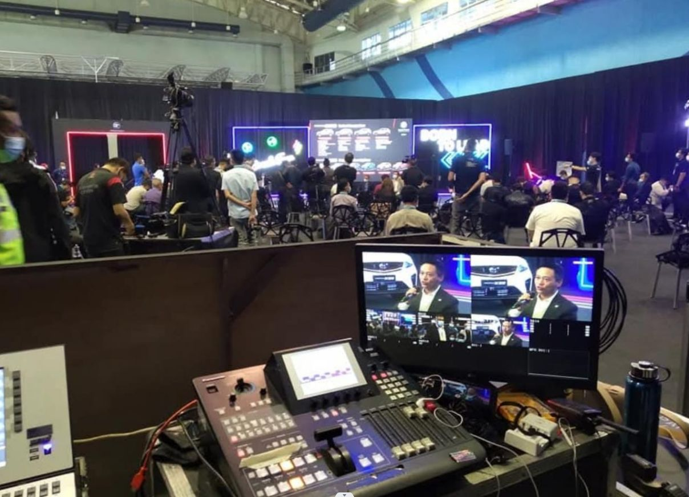
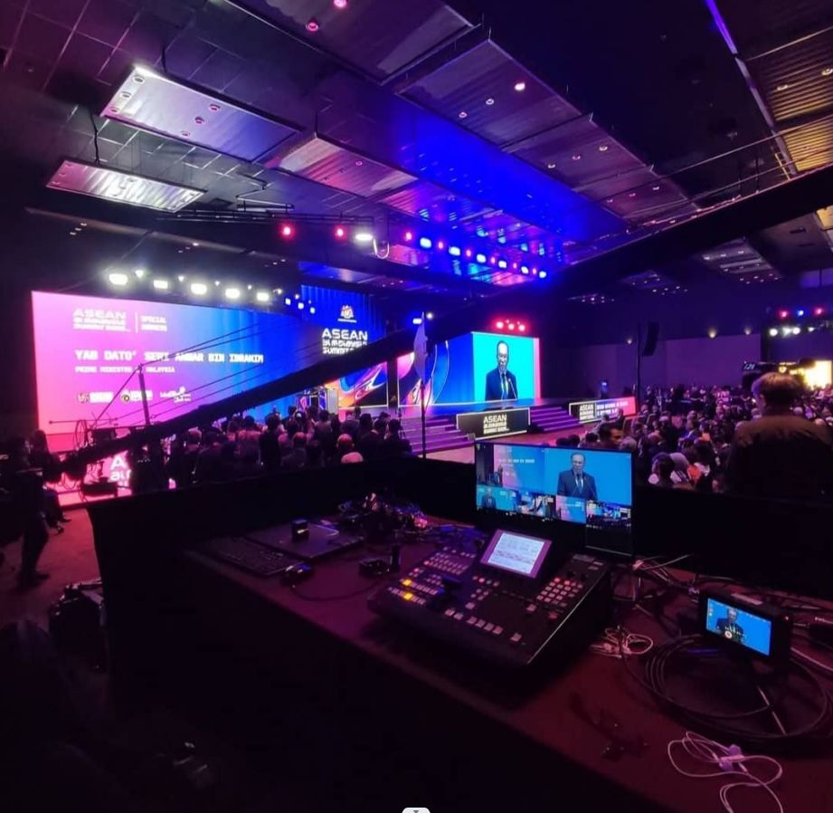
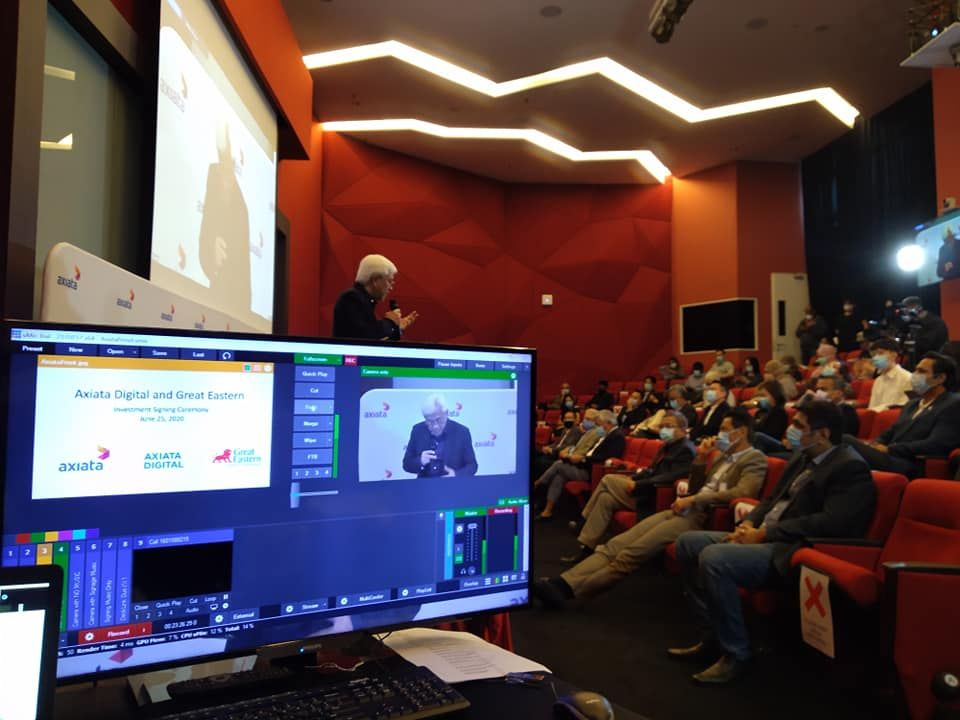
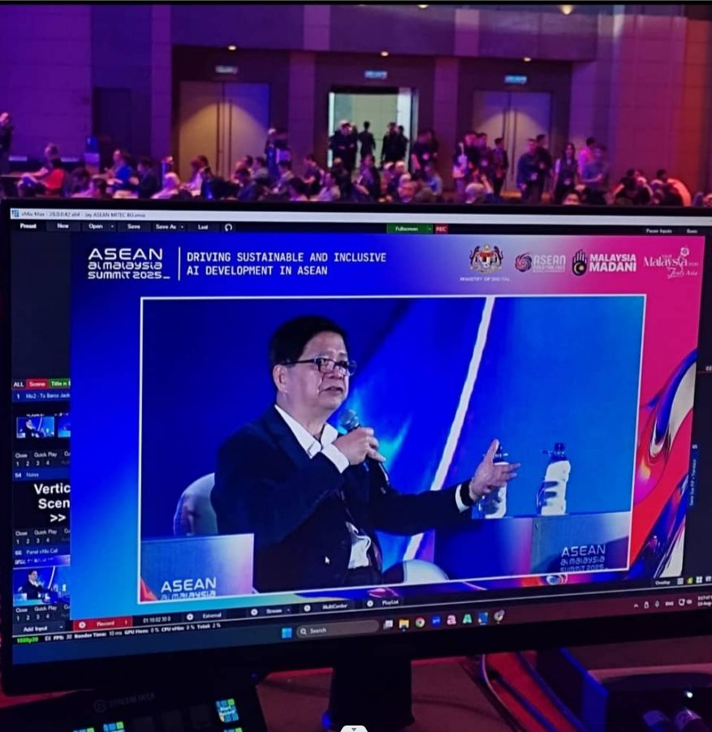

Video Livefeed & Livestream Services in Malaysia
We provide video livefeed and livestream production for conferences, forums, launches, award nights, seminars, exhibitions and roadshows. Our crew runs single camera (SCP) to multi camera (MCP) setups from Kuala Lumpur to anywhere in Malaysia.
Livefeed & livestream options
- MCP livefeed projected to the event hall LED screen
- Public livestreaming to Facebook and YouTube
- Private livestreaming to Zoom and Microsoft Teams
- Green screen production for virtual and hybrid events
- Event recording and highlight video after the event
Virtual & hybrid events
We launched complete virtual event solutions in March 2020. See our virtual event projects for Malaysia, Singapore and Brunei clients.
Why use a Livefeed
A Livefeed service broadcasts the stage, the speaker or the performance onto the LED screens in the hall, so everyone in the room sees clearly, even from the back. The same signal can also stream online, which is a separate Livestreaming package, so people who cannot attend the event can watch.
How a Livefeed event is run
- We receive information from you on the event date, venue and programme.
- On event day, we set up cameras and MCP (Multi Camera Production) equipment and send the livefeed to your venue LED screen.
- Our video mixer director switches between camera angles live during the event, while the other cameramen operate their own cameras at specific angles.
- We record the full event, and share the event footage with you a few days after the event ends.




Livefeed & event samples


Frequently Asked Questions
What is the difference between SCP and MCP?
SCP is single camera production. MCP is multi camera production with a switcher, suited to conferences and stage events where the livefeed is shown on the hall LED screen or livestreamed online.
Which platforms can you livestream to?
We livestream publicly to Facebook and YouTube and privately to Zoom and Microsoft Teams.
Can you combine livestream with a highlight video?
Yes. We can record the full event and also deliver an event highlight (recap) video.